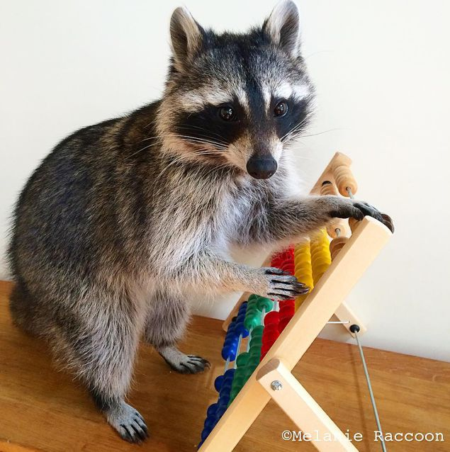
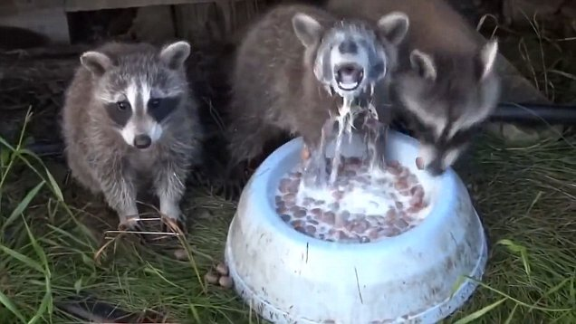
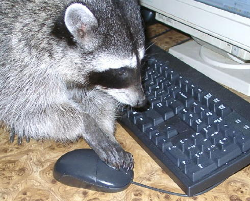
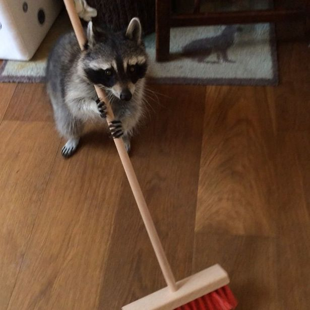
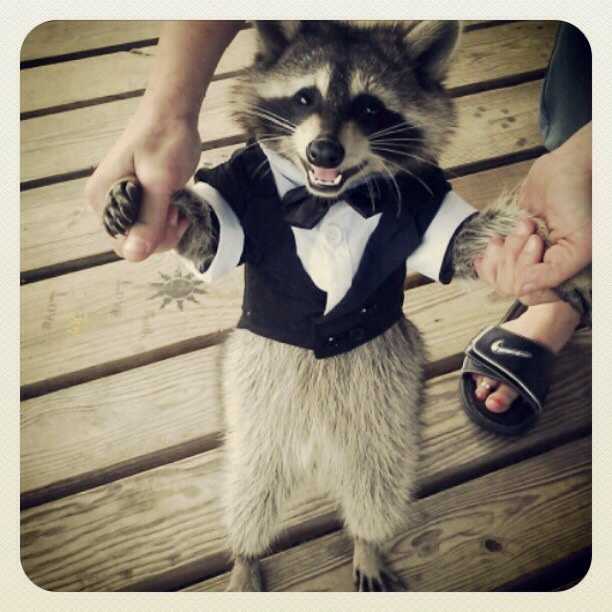
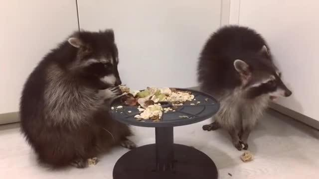
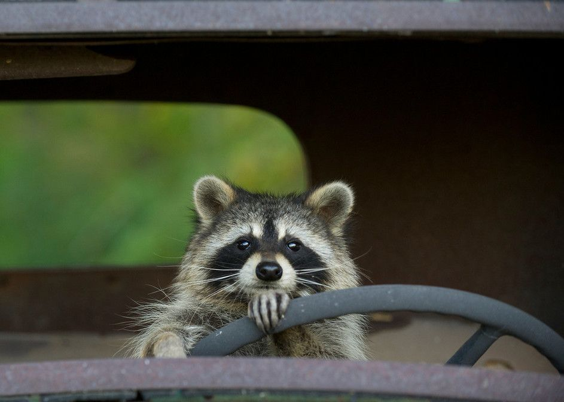
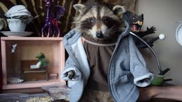

Reason 1: They can iron your clothes. Image

Reason 2: They know how to do tough math and arithmetics. Image
Reason 3: They believe in a balanced breakfast. Image
Reason 4: There good with computers and know how to code. Image
Reason 5: They can clean your house for you. Image
Reason 6: They can be your best man or maid of honor, they won't care. Image
Reason 7: They have table manners. Image
Reason 8: They can drive. Image
Reason 9: They have a fashion sense. Image
Reason 10: They are movie stars. Image